The authors and affiliations question
For event organisersNot an organiser?
The authors and affiliations question is the most complex in the submission form, but the guidance below should help you set it up to collect the author information you need.#
Go to Event dashboard → Abstract Management → Submission → Form & Setup
Then click on the Authors and Affiliations question.
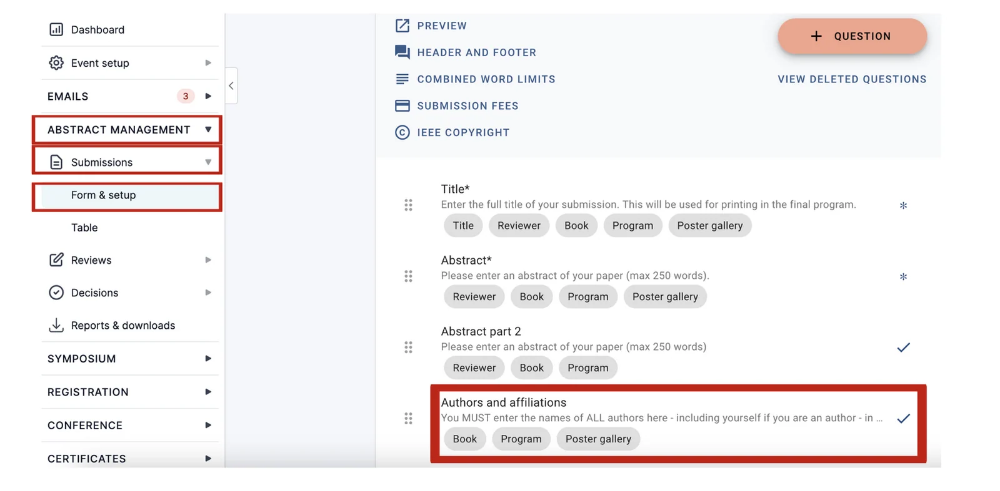
Skip to:
The question is split up into sections. The top section contains the author fields. You can overwrite any of the labels by typing into the relevant field. To the left of the titles of the fields, you will see some icons.
Author fields
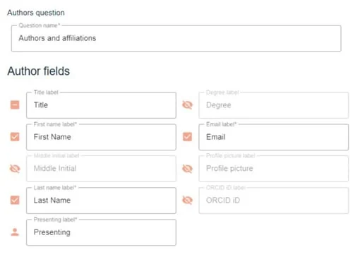
Clicking on the icon will reveal the following options.
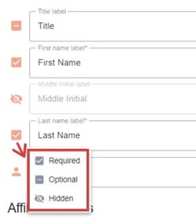
Required - the question is mandatory
Optional - the question is optional
Hidden - the user will not see this question on the submission form (this is mainly relevant for multi-stage).
There are a few fields that have additional options:
In the Title field, you can select Display as dropdown, if you would prefer this option. If this is selected, you can then add your options by clicking Choose title dropdown options.
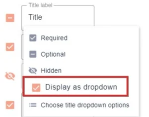
Add your options. Changes will be saved automatically. Click out of the panel to close.
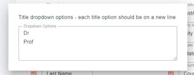
For the Email field, there is also the option to make it a required response for the presenter/s and / or presenter(s) only.
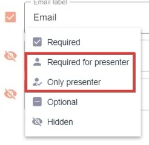
In the Profile picture and ORCID options, you can choose if you would like the responses to these questions to be shown in the program (if you have this module) and / or the abstract book(s).
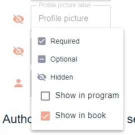
NB - if the question is hidden and these options are ticked, the profile picture will not appear in either.
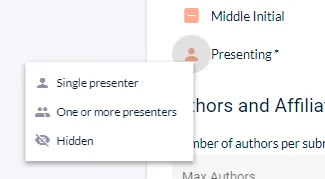
The last field is to determine how many presenters are permitted for the submission. Select the option you require.
Affiliation fields
These can also be set to Required, Optional or Hidden.
The labels are also fully editable so you can amend these if required.
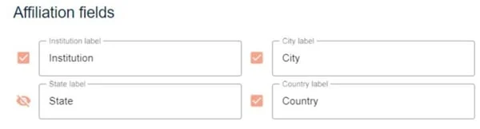
Country lists can be a contentious issue at conference and the standard list on Oxford Abstracts can be edited if you wish. It may be that you want to make a simple change from USA to United States of America or your conference may wish to include listings in the country list such as Basque Country. The choice is yours.
To make changes to the country list go to Event details and click on More options+
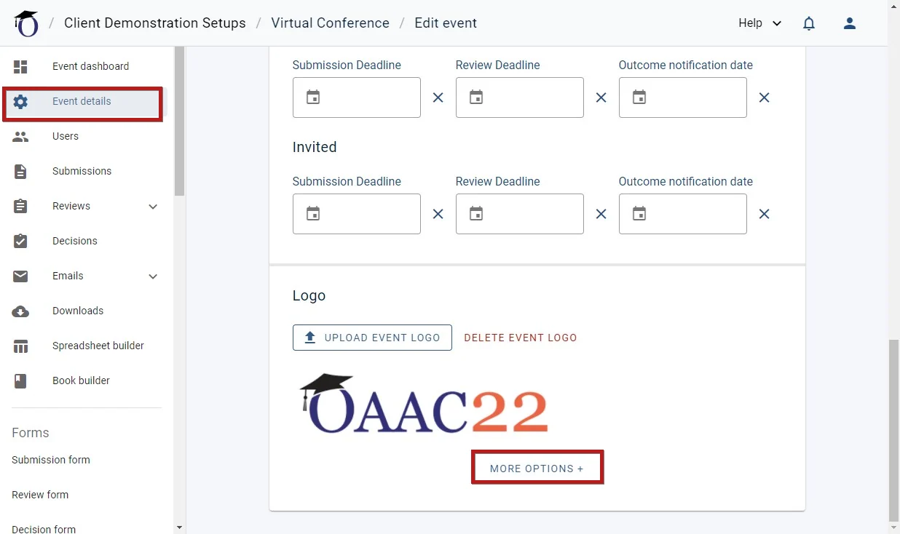
Then scroll down and click on Toggle country list from where you can edit, add or delete countries.
Just add a hyphen in front of the country to make it unselectable (it will be greyed out to the user)
Adding a hyphen will also make the country editable. When you have finished, you can click the Toggle country list off.
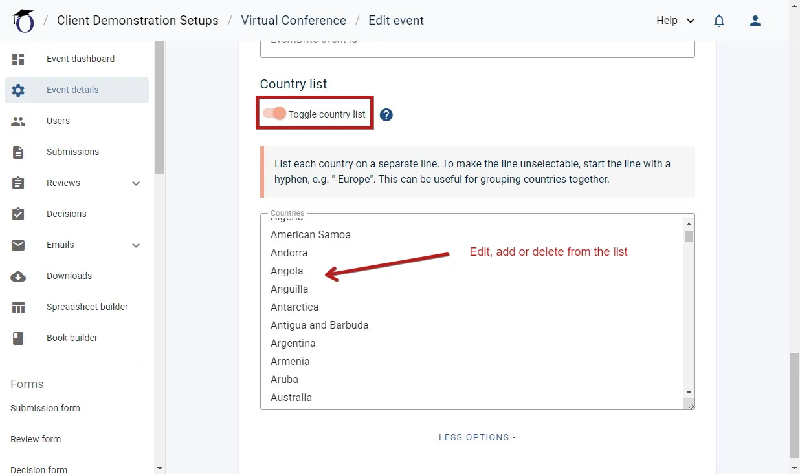
Under the Authors and affiliation settings, the first field can be edited if you would like to use alternative terminology - eg Proposer. This will then be reflected throughout the rest of the system.
You can also determine the maximum number of authors and affiliations per submission. If the Includes et al togglebox is checked, 'et al' will be added when the maximum number of authors has been listed by the submitter.
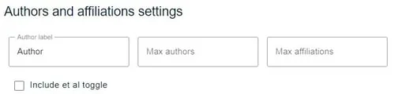
Custom Author Fields
You can create your own custom author field(s) (e.g. short bio) by clicking on the button labelled: Add Custom Field. You can also choose to select that only presenters answer the custom question, should you require. (not available in the FREE Package).
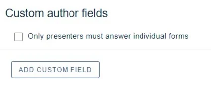
There is a choice of the following
:
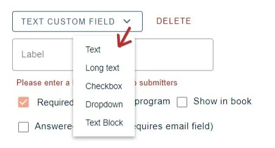
Each custom question requires a label and you can then set the visibility options.
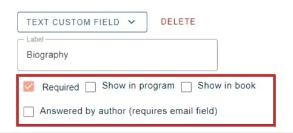
The last option creates a question that will be sent to the authors (or presenters only) if you ticked the option above), but the email field in the main authors and affiliations question will need to be set to required.
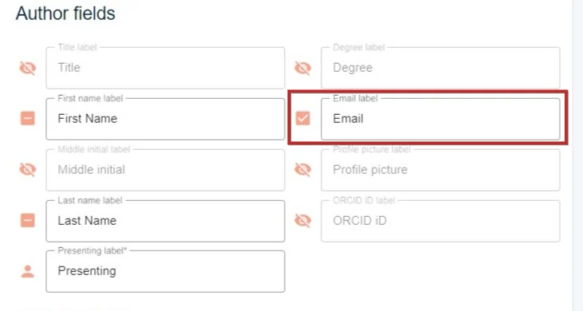
The custom field will appear as below in the submission form.
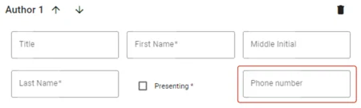
Did this page solve it?
Thanks — this helps us fix it.
Didn't solve it? Ask our support team
No question is too small, and there's no charge for asking. Raise a ticket and someone who knows the software will pick it up.